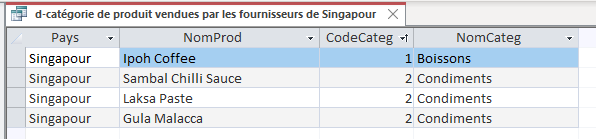

Indicateur I:
| Enoncé | interprétation |
|---|---|
| Quelles sont les catégories de produit vendues par les fournisseurs Singapouriens ? | Les catégories de produits vendus par les fournisseurs singapouriens nous donnent un indice précieux sur l’économie du pays, en mettant en évidence ses secteurs de renforcement, ainsi que ses capacités à proposer des produits de haute qualité ou plus de quantité ,donc moins coûteux pour l’achat. |
Resultat SQL

Code SQL
SELECT DISTINCT Fournisseur.Pays, Produit.NomProd, Categorie.CodeCateg, Categorie.NomCateg FROM Fournisseur INNER JOIN (Categorie INNER JOIN Produit ON Categorie.CodeCateg = Produit.CodeCateg) ON Fournisseur.NoFour = Produit.NoFour WHERE (((Fournisseur.Pays)="Singapour"));